1.为什么举办评选活动？
通过评选活动，在闵行党建引领社会治理工作中挖掘出善于带动、借助团队力量的骨干，汲取平凡力量，传递闵行梦想，使更多人成为引领正能量的“风向标”，携手同心，共促闵行发展。
2.要选出什么样的人？
本届评选范围为工作生活在闵行的人。应具备以下特质：
1、与党同心、与国同行，有实现美好生活的向往和追求；
2、在“美丽家园”、“美丽乡村”、“邻里中心建设”以及“创全”中发挥积极作用；
3、有带领团队助推发展的领导力和魅力；
4、服务企业、社会的成功实践，获得他人的广泛认同、支持和效仿。
3.如何成为凡人民星？
本次评选活动在。评选分为报名、海选、网络投票和终审四个环节，最终评选出10名左右闵行“凡人•民星”群众骨干，要成为其中的一员，您需要经过以下努力：
报名：点击下方“我要报名”，填写基本信息，同时登录您的邮箱填写报名表，发送至指定邮箱。
现场评估：由专家、前两届“凡人民星”以及群众代表组成大众观察团，走访候选人所在企业、社区。
我要报名
（本次报名截止至2017年7月15日）